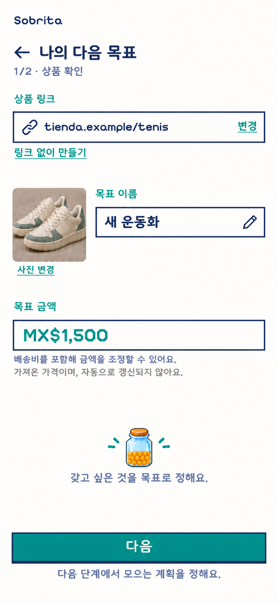
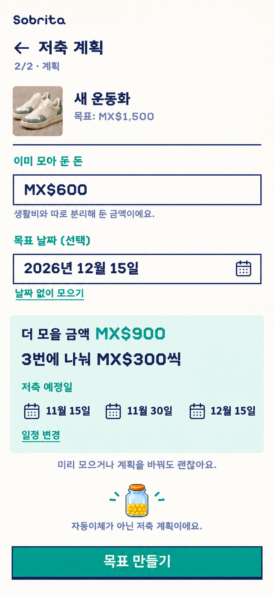
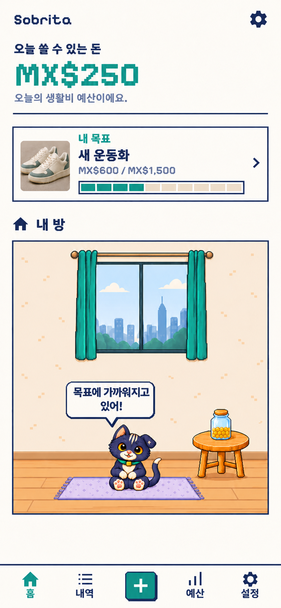
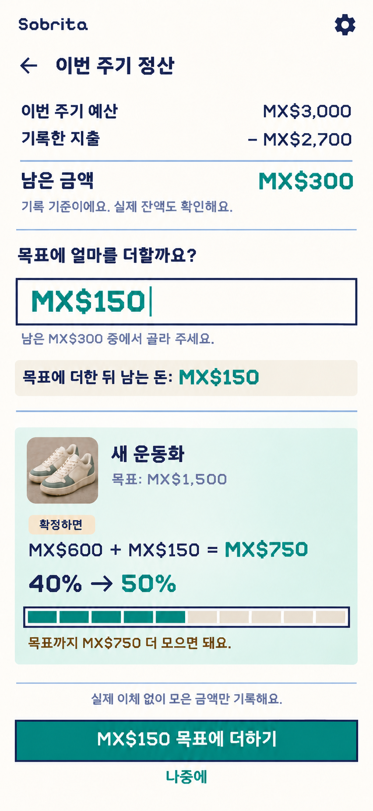
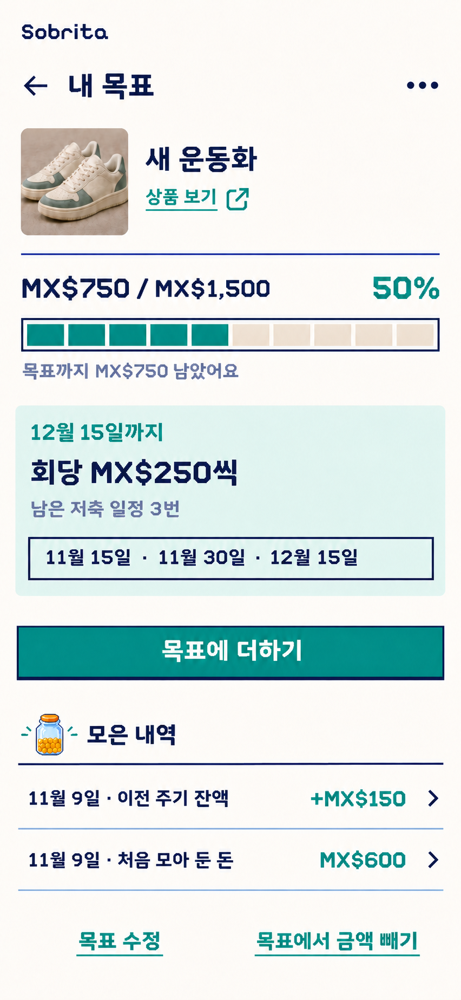

상품 확인 → 저축 계획 → 작은 홈 카드 → 정산과 배정 → 목표 상세. 기존 화면 구성을 유지하고 문구를 한국어로 옮겼습니다. 금액은 멕시코 페소(MX$) 그대로입니다.
링크에서 가져온 사진·이름·목표 금액을 확인합니다.

PNG 다운로드
이미 모아 둔 돈과 선택 날짜를 바탕으로 저축 일정을 정합니다.

홈에는 작은 목표 카드만 두고, 자세한 내용은 상세 화면에서 확인합니다.

남은 돈 중 얼마를 목표에 넣을지 고르면 반영 후 결과가 표시됩니다.

진행률·남은 저축 일정·모은 내역을 보고 목표와 금액을 수정합니다.
